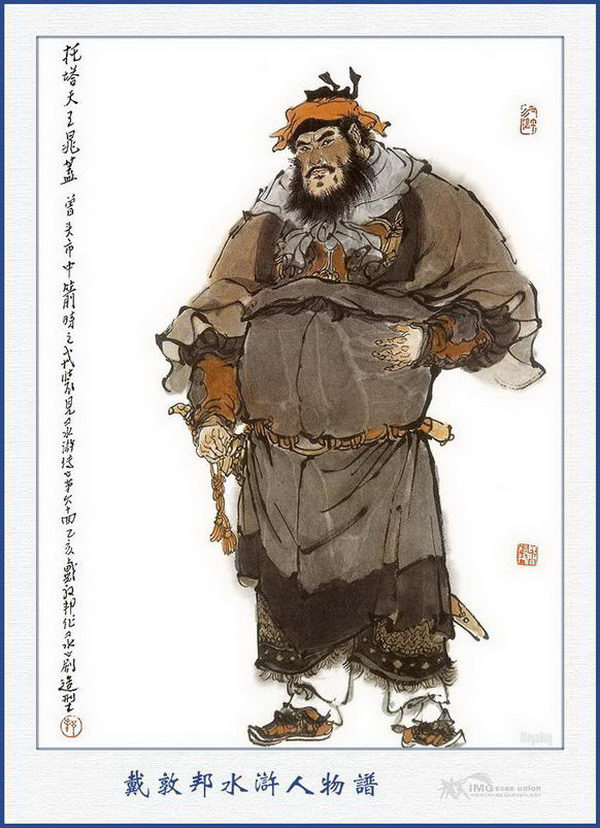
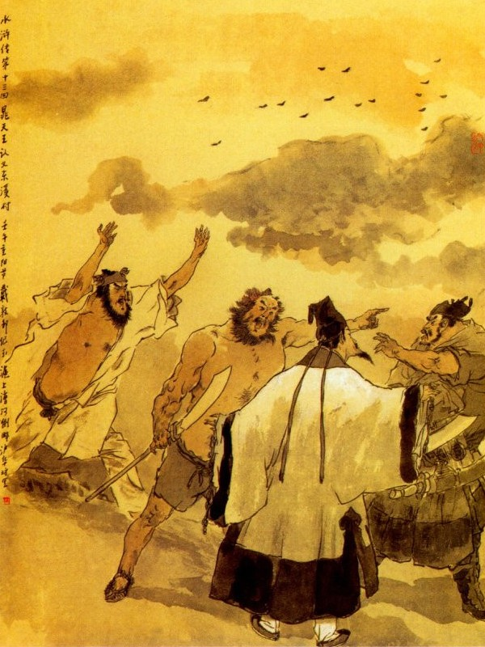
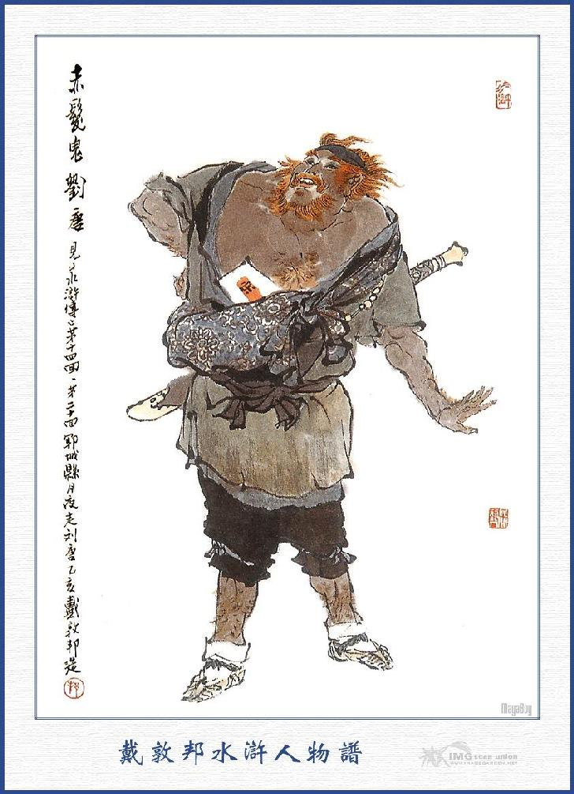
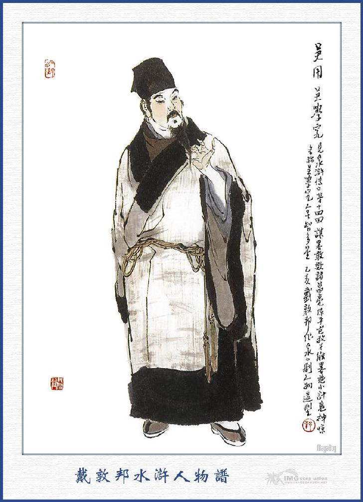

Lôi Hoành sai bọn thổ binh giải tên đại hán ấy về nhà Tiểu Bảo Chính ở thôn Đông Khê để ăn uống, điểm tâm qua loa rồi sẽ giải về huyện sau. Nguyên Bảo Chính thôn Đông Khê là người họ Tiều, tên là Cái, vốn con nhà phú hộ ở trong làng, bình sinh trọng nghĩa khinh tài, hay giao kết bọn hảo hán trong thiên hạ, bao nhiêu người đến ở đó, bất luận là hay dở thế nào, hết thảy đều dung nạp tử tế rồi đến lúc ra đi, lại tặng đãi tiền nong để mà chi dụng. Chàng ta sức vóc khỏe mạnh, thích nghề roi gậy kiếm cung mà không cần vợ con bận rộn, suốt ngày chỉ luyện tập gân cốt mà thôi. Ngoài cửa Đông Môn huyện Vận Thành có hai thôn, một bên gọi là Đông Khê, một bên gọi là Tây Khê, hai bên cách nhau bằng một cái khe lớn. Ngày trước bên thôn Tây Khê, thường có ma quỷ hiện hình, ban ngày dắt người xuống dưới khe mà không ai trị nổi. May đâu một hôm có một người đạo sĩ đi qua, người trong thôn liền đem chuyện kể cho đạo sĩ biết. Đạo sĩ bảo người hàng thôn trỏ đến chỗ ấy rồi dựng một cái bảo tháp, bằng đá xanh lên để trấn trụ bên khe thì bao nhiêu ma quỷ bên Tây Khê, kéo sang Đông Khê để ở. Bấy giờ Tiều Cái thấy chuyện như thế, lấy làm tức giận, đi sang bên kia khe cướp lấy bảo tháp đá xanh, đem về trấn ở bên đây. Bởi thế người gần đấy ai cũng gọi chàng ta là Thác Tháp Thiên Vương Tiều Cái mà uy thế lừng lẫy trong thôn, đám giang hồ ai cũng biết.
Khi đó Lôi Hoành cùng bọn thổ binh dong anh hảo hán kia, tới cổng trang, bảo trang khách vào báo cho Bảo Chính biết. Tiều Cái còn đang ngủ chưa dậy, bỗng nghe tin báo Lôi Hoành đến thì vội vàng gọi mở cửa trang để đón Lôi Hoành và bọn thổ binh vào. Bọn thổ binh rong chàng hảo hán vào ở một chỗ phòng kia, còn Lôi Hoành thì dẫn mấy tên đầu quân đến thảo trường để chào Bảo Chính. Bấy giờ Bảo Chính trở dậy tiếp chào rồi hỏi Lôi Hoành rằng:
- Chẳng hay Đô Đầu có công cán gì mà đêm hôm đến đây làm vậy?
- Tôi vâng lệnh Quan Huyện cùng với Chu Đồng mỗi người đi tuần tiễu một mặt, nhân qua đây nghỉ chân nhờ Bảo Chính một lát làm phiền giấc ngủ, xin ngài thứ lỗi cho.
Tiều Bảo Chính nói:
- Cái đó có hề chi, xin ngài ngồi chơi xơi chén rượu cho vui.
Nói đoạn, nhất diện sai người nhà dọn rượu lên để thiết đãi rồi lại hỏi Lôi Hoành rằng:
- Ngài qua tệ thôn đây, có bắt được tên trộm cướp nào không?
Lôi Hoành nói:
- Mới rồi đi qua điện Linh Quan, có một tên đại hán, đương nằm ngủ ở trong miếu, tôi đoán chắc là tay gian quái nằm ở trong đó, nên tôi có cho trói lại để nộp Quan Huyện; Nhân tiện qua đây còn sớm cũng muốn vào đây để nói cho Bảo Chính biết, để lỡ ra khi quan trên có hỏi đến thì Bảo Chính cũng được rõ căn nguyên. Người đó hiện còn trói, để ngoài phòng kia.
Tiều Cái nghe nói thì để bụng rồi lại nói với Lôi Hoành rằng:
- Xin cảm ơn ngài có lòng hạ cố, cho biết đến như thế.
Được một lát thì nhà dọn cơm lên. Thương Châu nói rằng:
- Ngồi đây có lẽ nói chuyện không tiện, vậy xin mời ngài vào nhà trong cho kín đáo.
Liền sai người nhà thắp đèn dọn rượu vào nhà trong, mời Lôi Hoành vào uống rượu và sai dọn rượu đãi bọn thổ binh luôn thể. Tiều Cái ngồi tiếp rượu Lôi Hoành, trong bụng nghĩ thầm rằng:
- Trong thôn ta đây làm gì có trộm cướp mà lão này bắt được? Âu là ta lẻn đi xem kỹ xem sao.
Nghĩ đoạn cất chén mời luôn dăm bảy chén rồi gọi người ra ngồi tiếp Lôi Hoành mà nói rằng:
- Xin mời ngài cứ xơi rượu, tôi xin phép ra cửa một lát rồi lại vào hầu ngay.
Nói rồi đứng dậy, thắp cái đèn bóng đi ra. Bấy giờ bọn thổ binh đang uống rượu ở nhà ngoài, Tiều Cái liền bảo người nhà dẫn vào phòng người bị trói để xem. Khi đẩy cửa phòng bước vào, thấy một chàng cao lớn lông ngông mình đen chùi chũi, hai bắp chân và hai trái đùi để trần như nhộng vậy. Tiều Cái giơ đèn soi lên mặt thì thấy mặt đen trán rộng, hai bên mái tóc có nốt ruồi đỏ, mọc mấy cái lông vàng ở trên, chàng liền hỏi người kia rằng:
- Bác này ở đâu đến đây, tôi không trông thấy ở trong thôn này bao giờ cả.
Người kia đáp:
- Tôi là khách ở xa, muốn đến tìm người ở mạn này, thế mà lại bắt trói tôi cho là trộm cướp rồi tôi cũng có chỗ phân biện được.
- Bác định tìm ai ở đây?
- Tôi định đến tìm một tay hảo hán ở đất này.
- Hảo hán tên là gì?
- Hảo hán ấy là Tiều Bảo Chính.
Tiều Cái nghe đến đó vẫn điềm nhiên hỏi rằng:
- Bác tìm người ấy có việc gì?
Người kia đáp:
- Ông ấy là một tay nghĩa sĩ hảo hán xưa nay, thiên hạ đã biết tiếng, nay tôi có món quà phú quý muốn tìm đến để mách ông ấy đây.
Tiều Cái nghe vậy thú thực rằng:
- Nếu vậy thì Tiều Bảo Chính chính là tôi đây mà đương định đến để tìm cách cứu bác đây. Thôi có phải thế thì bác cứ nhận tôi là ông cậu rồi đến khi tôi đưa bọn kia ra đây thì bác gọi to lên, bấy giờ tôi sẽ có cách thoát thân cho bác.

THÁC THÁP THIÊN VƯƠNG TIỀU CÁI
Người kia có vẻ vui mừng mà rằng:
- Nếu thế thì phúc đức nhà tôi, lại lạc vào tay ngài, xin ngài liệu cách chu toàn giúp chuyện cho.
Đoạn rồi Tiều Cái lại đi đóng cửa phòng cẩn thận mà trở vào nhà trong tiếp rượu Lôi Hoành.
Anh em bốn bể là nhà
Đã trong thanh khí lại là sẵn quen.
Bấy giờ hai người uống rượu hồi lâu, thấy vầng đông đã hơi rạng sáng, Lôi Hoành liền từ tạ đứng dậy mà nói rằng:
- Bây giờ trời đã sáng rồi, tôi xin phép Bảo Chính, để trở về cho kịp buổi hầu.
Tiều Cái nói:
- Vâng, ngài đi có việc quan, tôi cũng không dám lưu lại nữa, song nếu lần sau ngài có qua đây, lại xin đón vào chơi xơi nước.
Nói đoạn đưa chân Lôi Hoành lững thững đi ra. Khi đó các thổ binh rong hảo hán kia ra đến cửa trang, Bảo Chính trông thấy, liền bảo với Lôi Hoành rằng:
- Anh này trông khỏe mạnh lắm nhỉ?
Lôi Hoành nói:
- Thưa ngài, chính hắn là thằng ăn cướp bắt được ở điện Linh Quan hôm qua đấy.
Nói vừa dứt lời thì bỗng thấy anh chàng kia kêu ta lên:
- Cậu ơi! Cậu cứu tôi với!
Tiều Cái giả vờ không biết, quay lại nom kỹ một lượt rồi quát lên rằng:
- Á, thằng này là thằng Vương Tiểu Tam đó phải không?
Anh kia đáp:
- Vâng, chính tôi đây, xin cậu cứu tôi với.
Mọi người nghe lấy làm kinh ngạc rồi Lôi Hoành hỏi Bảo Chính rằng:
- Người này là ai? Sao lại biết Bảo Chính?
- Thưa ngài, thằng này là thằng Vương Tiểu Tam con bà chị tôi đây, hồi có còn nhỏ có ở đây bốn năm rồi sau nó theo bố mẹ sang Nam Kinh, chừng đã mấy mươi năm trời nay rồi. Hồi nó mười bốn mười lăm tuổi có theo một người buôn bán qua đây một lần rồi từ bấy tới nay không thấy tăm hơi đâu cả. Sau chỉ thấy người ta nói là nó lêu lổng không ra gì, thế mà sao bây giờ lại vơ vẩn ở đây. Lạ thực! Tôi trông nó bây giờ cũng không nhớ mấy, chỉ còn nhận được cái nốt ruồi đỏ ở trên mái tóc, cho nên được biết nó là cháu.
Nói xong quay ra mắng rằng:
- Tiểu Tam? Sao mày đến đây mà không tìm vào nhà tao, lại còn đi trộm cướp làm càn như vậy?
Người kia cũng kêu rằng:
- Thưa cậu, tôi có đi làm càn dở gì đâu?
- Mày không làm càn, có lẽ đâu người ta lại bắt?
Nói đoạn vớ lấy thanh gậy ở trong tay một đứa thổ binh giơ lên toan đánh.
Lôi Hoành cùng mọi người đều túm lại khuyên rằng:
- Bảo Chính hãy khoan tay, để hắn nói xem sao đã.
Anh kia lại nói:
- Xin cậu hãy bớt giận, để tôi kể cậu nghe: Từ khi tôi về đây một lần vào quãng mười bốn, mười lăm tuổi, tới nay đã ngoại mười năm rồi, hôm qua nhân đi đường uống mấy chén rượu quá say, không dám vào chào cậu, cho nên phải nằm tạm ở miếu đó một đêm, định sáng nay sẽ vào. Ai ngờ bị bọn họ đến, bất vấn thị phi gì cả, cứ trói phăng mà giải đến đây, chứ nào tôi có trộm cướp gì đâu? Tiều Cái lại giơ gậy lên, tay thì toan đánh mà miệng thì mắng rằng:
- Đồ súc sinh, mày đến đây mà không tìm ta ngay mà tham ăn uống làm vậy? Nhà ta không có rượu cho ngươi uống hay sao? Mày làm thế thì có nhục không?

Lôi Hoành can ngăn mà rằng:
- Thôi, Bảo Chính đừng giận nữa, anh ấy cũng không ăn trộm ăn cướp gì đâu. Bởi vì chúng tôi thấy anh này to lớn, mặt mày lại vơ vẩn nằm ngủ ở miếu, cho nên tôi mới ngờ mà bắt đó thôi, nếu có biết là cháu ngài thì có đâu chúng tôi lại thế.
Nói xong gọi thổ binh cởi trói cho người kia, để trả lại cho Bảo Chính.
Chúng nghe nói lập tức cởi trói cho người kia. Lôi Hoành lại nói:
- Xin Bảo Chính tha lỗi cho, vì chúng tôi lỡ lầm không biết là cháu ngài, thực là đắc tội. Chúng tôi xin phép ngài để về huyện thôi.
Tiều Cái nói:
- Hãy khoan, mời Đô Đầu vào chơi tôi nói câu chuyện này đã.
Nói xong lại mời Lôi Hoành vào nhà trong, đưa ra 10 lạng bạc mà rằng:
- Tôi gọi là chút thành tâm, xin Đô Đầu nhận lấy cho.
Lôi Hoành từ chối mà rằng:
- Sao ngài lại thế? Chúng tôi không dám nhận.
- Nếu thế thì ngài không nể Tiều Cái tôi, xin thế nào ngài cũng cầm lấy cho.
Lôi Hoành miễn cưỡng cầm lấy mà rằng:
- Bảo Chính đã dạy thế thì tôi xin tạm lấy rồi sau sẽ trả ơn ngài.
Bảo Chính lại gọi anh kia đến tạ ơn Lôi Hoành và lấy thêm ít tiền đưa cho lũ thổ binh rồi lại tiễn chân bọn ấy ra về. Bấy giờ Tiều Cái mời anh chàng kia vào nhà trong, sai người lấy quần áo cho thay rồi ung dung hỏi đến tên họ hành tung. Người kia nói:
- Tôi họ Lưu tên Đường, vốn người ở Đồng Lộ, nhân vì bên mái tóc có lông đỏ, cho nên họ thường gọi tôi là Xích Phát quỷ, nay nhân có một món phú quý rất to, toan đến đây để hiến ngài, ai ngờ bị họ bắt đem đến đây, thực là sự bất hạnh mà cũng may cho tôi lắm, vậy xin Ca Ca hãy nhận tôi bốn lạy rồi sẽ thưa chuyện.
Nói xong lạy luôn ngay bốn lạy. Tiều Cái hỏi:
- Phú quý thế nào, ở đâu, bác hãy nói tôi nghe xem sao?
Lưu Đường nói:
- Chúng tôi từ thủa nhỏ trôi nổi giang hồ, nay đây mai đó cũng kết nạp được ít bạn hảo hán ở trong đời, xưa nay vẫn thấy bọn tay chơi ở Sơn Đông Hà Bắc, thường hay lẩn quẩn đến đây, bởi thế nên tôi biết tiếng Ca Ca mà muốn đến đây để bàn một việc. Nhưng việc này tất phải kín đáo không thể nào có một người ngoài nghe được.
- Ở đây toàn là tâm phúc của tôi cả, xin cứ nói không hề chi.
- Ngài có biết chuyện Lương Trung Thư ở Bắc Kinh đây sắp đưa châu báu về mừng bố vợ là Thái Sư ở Đông Kinh không? Ấy năm ngoái đã đưa đi một chuyến 10 vạn quan tiền châu báu mà giữa đường bị người ta cướp mất, đến nay tra mãi không ra. Tới năm nay lại sắp tải đi 10 vạn kim ngân châu báu nữa, để mừng sinh nhật hôm rằm tháng sáu, có lẽ nay mai là khởi trình đây. Tôi thiết tưởng cái của bất nghĩa, nó khoét xương hút máu của dân ấy, dẫu ta có lấy đi cũng chẳng tội gì? Vả tôi nghe tiếng Ca Ca là người tài giỏi mà tôi đây dẫu chẳng ra gì cũng biết được một đôi ngón võ, bởi vậy muốn đến bàn với Ca Ca, nên thừa cơ hội mà cướp lấy món tiền của cái đồ ăn cướp ngày của dân kia mà cứu bọn giang hồ bần bách, có thú hơn không? Cứ như bọn chúng ta đi thì tôi tưởng không kể gì nó có dăm ba người, dẫu nó có tới vài ba nghìn quân, ta cũng có thể vung đầu gậy mà không sợ chi hết cả. Việc ấy nếu Ca Ca định làm thì tiểu đệ xin tình nguyện giúp một tay, Ca Ca nghĩ sao?

LƯU ĐƯỜNG
Tiều Cái nói:
- Ta hãy thư thả bàn kỹ xem đã. Nay bác mới ở xa đến, chắc là hãy còn mệt nhọc, vậy xin hãy vào phòng nghỉ rồi ta sẽ bàn lại.
Nói xong gọi người nhà dẫn Lưu Đường vào một gian phòng mới nằm ở đó. Khi Lưu Đường nằm một mình ở trong phòng, chợt nghĩ ra rằng: "Mình phen này thực vất vả quá! Cũng may mà gặp được Tiều Cái, cho nên mới thoát được thế này, nhưng nghĩ lại giận cho thằng khốn nạn hôm qua, bỗng dưng nó bắt mình, bảo ngay là giặc cướp mà trói giam mất hẳn một đêm, thế có tức không? Bây giờ có lẽ nó đi cũng chưa xa mấy, âu là ta đuổi đánh cho nó một mẻ mà lấy lại món tiền cho Tiều Cái là hơn. Đồ súc sinh ấy nó quen thói tham quan lại nhũng xưa nay, phải liệu cho nó mới được". Nghĩ đoạn vớ thanh đao đi ra, khép cửa buồng lại rồi lẻn ra ngoài trang mà chạy về đằng Nam để theo Lôi Hoành. Mới hay:
Anh hùng đứng ở trên đời,
Lẽ nào dung túng những loài tham ô.
Ra tay múa ngọn gươm thù,
Moi gan tàn ác đền bù núi sông.
Bấy giờ mặt trời đã cao hơn trượng, Lôi Hoành đương dẫn lũ thổ binh đi lững thững trên đường, Lưu Đường chạy thốc lại đến nơi mà quát lên rằng:
- Tên Đô Đầu kia, muốn sống đứng lại đấy.
Lôi Hoành nghe nói giật mình quay cổ lại, thấy Lưu Đường hầm hầm chạy đến, liền giật lấy thanh đao của đứa thổ binh mà thét lên rằng
- Thằng kia mày định đuổi ta để làm gì?
Lưu Đường nói:
- Mầy có biết điều để 10 lạng bạc đây thì ta tha cho mày.
- Tiền này là tiền của cậu mày tặng ta đây, có chuyện gì đến mày? Nếu ta không nể cậu mày thì ta chém cổ đi rồi, lại còn dám đến đòi tiền ta hay sao?
Lưu Đường hầm hầm giận dữ mà rằng:
- Ta tự nhiên vô cớ không làm giặc ăn cướp gì, thế mà mày dám bắt trói ta một đêm rồi lại biểu cậu ta mà lấy 10 lạng bạc là nghĩa gì? Quân này hút máu hút mủ của dân đã quen, còn toan bắt nạt bọn ta à? Muốn tử tế đưa trả món tiền ấy đây, bằng không ta xé xác lập tức bây giờ cho mà coi.
Lôi Hoành cũng nổi giận trỏ Lưu Đường mà mắng rằng:
- Mầy là đồ ăn cắp làm nhục cả gia phong, lại còn dám vô lễ với ta à?
- Chính mày là đồ ăn cướp ăn hại của dân của nước, mày còn há mồm mắng ai?
Lưu Đường nói xong vác đao xông vào đánh luôn. Lôi Hoành cười ha hả rồi giơ đao lên đỡ. Hai bên đánh nhau ở giữa đường cái có tới 50 hiệp mà không biết bên nào được bên nào thua. Bọn thổ binh thấy vậy, toan kéo nhau đến để giúp sức Lôi Hoành mà đánh Lưu Đường. Chợt đâu bên cạnh đường có một người, ở trong cánh cửa phên, vác đôi đồng giản bước ra kêu lên rằng:
- Hai hảo hán hãy khoan tay tôi nói câu này đã.
Nói đoạn xông vào đưa đồng giản rẽ đám đánh nhau ra làm đôi. Lưu Đường và Lôi Hoành dừng tay đứng xa ra ngoài vòng rồi nhìn lên thấy người kia mày xanh mắt sắc, mặt trắng râu dài, ăn mặc ra dáng một nhà nho sĩ. Nguyên người ấy tên là Trí Đa Tinh Ngô Dụng, biểu tự là Học Cứu, đạo hiệu là Gia Lượng tiên sinh, vốn người làng ở đấy, chơi với Tiều Cái rất thân xưa nay. Bấy giờ Ngô Dụng tay cầm đồng giản trỏ hỏi Lưu Đường rằng:
- Bác này ở đâu? Vì cớ sao lại đánh với Đô Đầu thế?
Lưu Đường trừng mắt nhìn Ngô Dụng mà nói rằng:
- Không việc gì đến nhà thầy.
Lôi Hoành thấy vậy, liền đem đầu đuôi kể cho Ngô Dụng nghe, Ngô Dụng nghe nói bảo Lưu Đường rằng:
- Nếu vậy thì bác đừng chấp nê nữa, ông cậu bác với tôi là chỗ chí thân mà Đô đầu đây là người tử tế, nếu bác lại làm như thế thì mất cả thể diện ông cậu bác chứ không phải chơi.
Lưu Đường đáp rằng:
- Nhà thầy không biết, nguyên việc này là hắn đánh lừa để lấy tiền, chứ cậu tôi có bằng lòng cho hắn đâu! Nếu hắn không trả lại thì tôi thề quyết không thôi.
Lôi Hoành nói:
- Trừ khi có Bảo Chính đến đây thì tôi trả lại.
Lưu Đường nói:
- Ngươi muốn đổ oan cho người ta là giặc rồi lại lừa lấy tiền mà không trả ta là nghĩa lý gì?
- Ta nhất định không trả.
- Không trả thì hỏi thanh đao ở tay ta đây.
Ngô Dụng lại gạt đi mà rằng:
- Hai bên đánh nhau suốt nửa ngày trời, chưa biết bên nào được thua, giờ định còn đánh nhau đến đâu nữa.
Lưu Đường nói:
- Đánh đến bao giờ một thằng sống, một thằng chết mới thôi.
Lôi Hoành nói:
- Nếu ta có sợ ngươi thì ta đã thét thổ binh vào đánh giúp, nhưng thế không phải là hảo hán, chỉ một mình ta cũng đánh đổ được ngươi cho mà xem.
Lưu Đường cả giận vỗ bụng thét lên rằng:
- Ta không sợ, ta không sợ!
Nói đoạn lại xông vào đánh nhau, Ngô Dụng hết sức can ngăn cũng không được. Chợt đâu thấy bọn thổ binh trỏ đằng xa mà nói rằng:
- Bảo Chính đã đến kia, ta đến nói với Bảo Chính mới được.
Lưu Đường nghe nói vội quay lại xem, thấy Tiều Bảo Chính đương khoác áo xốc xa xốc xếch, chạy tong tả đến mà quát lên rằng:
- Thằng rồ dại kia không được vô lễ.
Ngô Dụng thấy Bảo Chính đến, cười ta lên mà bảo rằng:
- Xin mời Bảo Chính đến đây, các ông đương đánh nhau hăng quá.
Tiều Cái vừa thở hồng hộc vừa nói:
- Làm thế nào mà đã trốn đến đây để đánh nhau thế?
Lôi Hoành nói:
- Anh ấy vác đao đến đòi trả lại 10 lạng bạc, nhưng tôi bảo có ngài đến thì tôi sẽ trả, ai ngờ anh ấy giơ tay đánh luôn, có tới năm sáu mươi hiệp rồi sau thầy đồ đến khuyên giải mãi cũng không thôi.
Tiều Cái nói:
- Thằng súc sinh này, thế mà tôi không được biết, xin Đô đầu nể mặt tôi mà đi về rồi khi khác tôi xin đến tạ tội.
- Vâng, có thầy đồ đấy, tôi có chấp anh ta đâu làm thế thì thành ra lại phiền cho Bảo Chính quá.
Lôi Hoành nói xong bái tạ Tiều Cái, Ngô Dụng mà kéo thổ binh về huyện. Bấy giờ Ngô Dụng nói với Tiều Cái rằng:
- Hôm nay nếu Bảo Chính không ra đây thì có lẽ xảy ra chuyện to mất. Võ nghệ của cháu ngài giỏi lắm, tôi đứng nấp xem đã lâu, thấy Lôi Hoành đã là một tay thiện nghệ mà cũng chỉ che đỡ quanh co không sao địch nổi. Nếu hai người đánh nhau luôn một hồi nữa thì Lôi Hoành tất nguy mất, vì thế nên tôi phải chạy ra can lại. Nhưng không biết rằng cháu ngài ở đâu đến đây mà tôi không thấy ở trang bao giờ?

TRÍ ĐA TINH NGÔ DỤNG
Tiều Cái nói:
- Tôi đương tính sai người đi mời ngài đến nói chuyện, bất đồ tìm đến anh này thì không thấy đâu mà thanh đao ở trên giá cũng mất. Sau thấy trẻ chăn trâu nói hảo hán vác thanh đao chạy ra phía Nam, tôi liền tất tả đuổi theo đến đây, may mà có ngài khuyên giải hộ, không thì lỡ ra việc lớn không chơi. Bây giờ xin mời thầy qua bên tôi chơi, bàn mấy câu chuyện cần đã. Ngô Dụng vâng lời, quay về nhà học, cất đồng giản đi, dặn nhà chủ cho học trò nghỉ một buổi rồi khóa cửa buồng học mà cùng với Tiều Cái, Lưu Đường đi vào trang viện. Khi về tới nhà, Tiều Cái mời Ngô Dụng vào cả nhà trong cùng ngồi nói chuyện rồi đem tên họ Lưu Đường, cùng câu chuyện đến đây để thuật cho Ngô Dụng nghe và lại bảo rằng:
- Bác ta đến đây, thực là một ý rất tốt mà lại ứng với giấc mộng của tôi đêm qua. Đêm hôm qua tôi nằm mê thấy bảy vì sao Bắc Đẩu, rơi xuống nóc nhà mà trên chỗ chuôi sao Đẩu lại có một vì sao nhỏ, hóa ra một tia sáng đi sang Bắc mất. Tôi đoán như thế, tất là có lợi, đương định đi mời thầy đến để xem việc ấy như thế nào?
Ngô Dụng cười mà đáp rằng:
- Tôi thấy bác Lưu Đường đến đây, bằng một cách nhiêu khê như vậy, trong lòng cũng đã đoán được bảy tám phần rồi, nếu quả như thế thì là một việc rất hay nên làm, những của tham tàn bất nghĩa không lấy thì để làm chi! Duy có một điều là việc này bất tất phải nhiều người, nhưng mà ít người quá cũng không được. Trong bọn người nhà đây kể cũng nhiều, nhưng mà vô dụng cả, còn ba người mình tuy có giỏi thực cũng khó lòng mà đảm nhiệm được xong, việc này tất do phải có bảy tám tay hảo hán mới xong, chứ nhiều quá cũng vô ích.
Tiều Cái nói:
- Chẳng hay là ứng vào với số sao ở trong giấc mộng chăng?
- Có lẽ, giấc mộng của quan bác không phải tầm thường, cái này chắc là về mạn Bắc lại có người phù trợ được ta đây hẳn.
Nói đoạn, chau mày ngồi nghĩ một lúc rồi lại nói rằng:
- Được rồi. được rồi. tôi nhớ ra trong ấy có ba anh em nhà này, võ nghệ cao cường mà nhất sinh can đảm là có thể giúp ta xong việc, để rồi ta xin kể cho Bảo Chính nghe. Cho hay:
Anh hùng mới biết anh hùng,
Có trong thanh khí mới cùng tìm nhau,
Giang Hồ xuôi ngược bấy lâu,
Non xa nước bạc thiếu đâu anh tài?
Đã mang tiếng gớm ghê đời,
Làm cho đáo để cho người gớm ghê!
Phù vân là của bất nghì,
Giết người tàn ác tội gì hay không!
Lời bàn của Thánh Thán
Một bộ sách bảy mươi hồi, chép một trăm lẻ tám anh hùng thì Tiều Cái là người khởi lên làm Thủ Lãnh, Tiều Cái khởi lên làm Thủ Lãnh mà không chép ngay tự hồi đầu, như mọi chuyện khác, đến hồi 13 mới xuất danh, bao nhiêu chuyện đã xảy từ 13 hồi trước, nhân đó mà được biết tác giả trong lòng chứa toàn bộ truyện rồi sau hạ bút viết ra. Nếu không trong lòng chứa toàn bộ truyện, tả Tiều Cái ngay từ đầu làm những chuyện kinh thiên động địa, như quấy nước chọc trời thì đám giặc ấy còn đâu giá trị, phải tả ra bao nhiêu rắc rối mọi người, để đưa lại Tiều Cái làm Thủ Lãnh, đám người ấy mới khỏi tai tiếng sau này.
Gia Lượng mới ra khỏi lều tranh, nói một câu đầu: Việc này ít người làm chẳng được mà nhiều người làm cũng chẳng được, lời nói chí lý thay dẫu đem trị thiên hạ cũng không khác vậy. Câu nói ít người làm chẳng được cũng như câu nói nhiều người làm chẳng được, vì kẻ hay người dở, phải xét được ra, để mà dùng đến. Hỡi ôi! Vua không kín đáo thì mất đến thân mình, đúng như câu: Dân có thể khiến theo, không thể cho biết, đấy cơ mưu vậy. Theo Lễ chế nhà Châu dùng 360 vị quan, đều thuộc loại dân khả xử đây, bất khả xử tri, vì Khu Mật Viện Đại Thần chỉ Tam Công Tam Cô dự bàn, còn nhiều người không được. Ngô Dụng nói há chẳng phải là yếu luận việc Vương Đạo trị thiên hạ đấy ư? Một bộ truyện tả 108 anh hùng làm đầu là Tiều Cái, khởi ra từ giấc mộng thì than ôi! Đáng tỉnh ngộ thay! Vì kể ra sự tích 108 người, có cười, có khóc, có khen, có chê, có nhường, có cướp, có luồn cúi, có báo thù. Thế mà khởi đầu từ một giấc mộng thì biết ở đời việc gì không là mộng ảo? Đại địa mộng quốc, xưa nay mộng ảnh, vinh nhục mộng sự, chúng sinh mộng hồn. Há chuyện 108 người này là mộng, xưng hùng xưng bá, nay còn đâu? Đại thiên thế giới đều là mộng cả, độc giả đến nay chẳng đáng ngại.